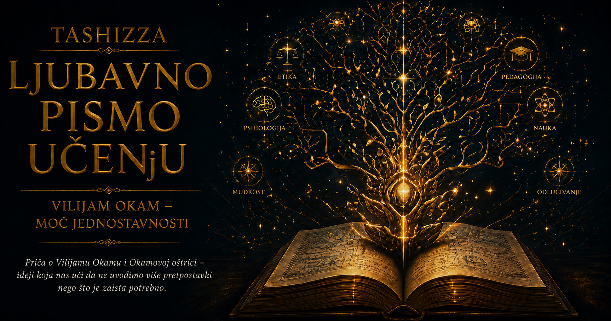

Ljubavno pismo učenju

Mnogo pre nego što je jednostavnost postala poželjna osobina naučne teorije, tehničkog rešenja ili dobro napisanog računarskog programa, učen svet je svoju ozbiljnost često pokazivao mnoštvom pojmova. Srednjovekovne škole nasledile su ogromno intelektualno zdanje antičke filozofije, hrišćanske teologije, rimskog prava i arapskih komentara grčkih mislilaca. U tom zdanju gotovo ništa nije bilo bez imena, podele i mesta u hijerarhiji. Priroda, jezik i mišljenje tumačeni su pomoću supstancija, svojstava, oblika, uzroka, svrha, odnosa, univerzalija i brojnih posrednih pojmova kojima se objašnjavalo kako pojedinačne stvari pripadaju opštim vrstama. Takav svet nije bio neuređen. Naprotiv, bio je toliko brižljivo uređen da je ponekad postajalo teško razaznati šta u njemu zaista postoji, a šta je ljudski um uneo kako bi sopstveno objašnjenje učinio potpunim.
Zamislimo učionicu u kojoj se raspravlja o jednostavnom pitanju: šta je zajedničko svim ljudima? Pred okupljenim učenjacima nalaze se pojedinačni ljudi, različiti po izgledu, karakteru i životu, ali svi obuhvaćeni jednom rečju – čovek. Da li toj opštoj reči odgovara neka stvarna, zajednička priroda koja postoji izvan svakog pojedinca? Da li „čovečnost” ima sopstveni oblik postojanja, ili um samo prepoznaje sličnosti među pojedinačnim bićima i označava ih zajedničkim imenom? Pitanje je izgledalo jezičko, ali je vodilo pravo u srce metafizike. Od odgovora je zavisilo koliko vrsta bića treba pretpostaviti da bi se objasnilo ono što vidimo i izgovaramo.
U takvom intelektualnom okruženju pojavila se misao čija će snaga poticati upravo iz njene uzdržanosti. Vilijam Okam, franjevački teolog i logičar sa početka četrnaestog veka, uporno je primenjivao načelo prema kojem mnoštvo ne treba pretpostavljati bez potrebe. U njegovim delima pojavljuju se različite formulacije te zamisli, među njima i tvrdnja da pluralitet nikada ne treba postavljati bez nužnosti. Rečenica koja će kasnije postati najpoznatija – da entitete ne treba umnožavati preko potrebe – nije pronađena u tom obliku u njegovim sačuvanim spisima. Nastala je kao kasnija sažeta formula jedne šire skolastičke tradicije, a sa Okamom je povezana zato što je on ovo pravilo primenjivao dosledno, prodorno i sa posledicama koje su menjale čitave oblasti mišljenja.
Ideja će mnogo kasnije dobiti slikovito ime „Okamova oštrica”. Oštrica odvaja ono što objašnjenje zahteva od onoga što smo mu dodali iz navike, straha od praznine ili želje da iza svake pojave postavimo još jednu nevidljivu stvar. Ona ne seče činjenice, složenost sveta ni pojave koje nam se ne dopadaju. Usmerena je na naše pretpostavke. Kada dva objašnjenja podjednako dobro obuhvataju ono što je poznato, prednost se daje onome koje uvodi manje nepotrebnih činilaca. Svaka dodatna pretpostavka mora da opravda svoje prisustvo nečim što bez nje ne bismo mogli da razumemo, objasnimo ili predvidimo.
U tome je sadržan tihi intelektualni preokret. Čovek koji objašnjava svet više nema pravo da zahteva postojanje nečega samo zato što mu takav pojam olakšava govor. Reči nisu automatski dokaz da svakoj od njih odgovara zasebno biće. Gramatička imenica ne izdaje ontološku potvrdu o postojanju. Možemo govoriti o narodu, lepoti, sličnosti, kretanju ili čovečnosti, a da prethodno moramo ispitati da li tim izrazima označavamo samostalne stvari, osobine pojedinačnih stvari, odnose među njima ili pojmove kojima um uređuje iskustvo.
Za Okama su pojedinačna bića bila osnovna stvarnost. Opšti pojmovi imali su važnu ulogu u mišljenju i govoru, ali njihova korisnost nije zahtevala da univerzalna „čovečnost” postoji kao dodatni predmet pored svakog pojedinačnog čoveka. Um može da oblikuje opšti pojam na osnovu susreta sa mnogim pojedincima. Reč „drvo” omogućava nam da govorimo o hrastu, lipi i brezi kao pripadnicima iste šire grupe, ali iz toga ne sledi da negde, pored svih stabala, mora postojati još jedno biće zvano „drvenost”. Jezik sažima mnoštvo iskustava. Oštrica nas podseća da sažetak ne treba zameniti za novu stvar u svetu.
Ovaj način mišljenja nije nastao iz neprijateljstva prema apstrakciji. Bez opštih pojmova ne bismo mogli da učimo, zaključujemo, gradimo nauku ni prenosimo znanje. Njegova namera bila je da se preciznije odredi šta apstrakcija čini. Ona može biti način na koji razum obuhvata mnoge slične pojave, bez obaveze da svakoj misaonoj kategoriji pripišemo nezavisno postojanje. Time se prostor mišljenja pročistio. Um je dobio pravo da koristi pojmove kao sredstva, ali i dužnost da ne pretvara svako sredstvo u deo stvarnosti koju pokušava da opiše.
Moć ove ideje lako se oseća u svakodnevnom primeru. Čovek se ujutru probudi i otkrije da električna lampa ne radi. Može pretpostaviti da je sijalica pregorela, da je nestalo struje, da je prekidač pokvaren, da je kabl oštećen ili da je čitava instalacija pretrpela kvar. Mogao bi dodati i nevidljivu silu koja se pojavljuje samo utorkom i sprečava svetlost da nastane, ali za takvu pretpostavku nema nikakav dokaz. Razumno ispitivanje počinje proverom najneposrednijih uzroka. Čovek pogleda da li druge lampe rade, proveri osigurač i zameni sijalicu. Jednostavnost ovde ne garantuje unapred da je sijalica krivac. Ona uređuje redosled pitanja i sprečava da se istraživanje izgubi među mogućnostima koje nemaju jednaku potporu.
Isti obrazac pojavljuje se u ozbiljnijim istraživanjima. Ako astronom primeti malo odstupanje u kretanju nebeskog tela, može menjati postojeće proračune, proveravati merenja ili pretpostaviti novo telo čija gravitacija utiče na putanju. Nova planeta, čestica ili sila nije „suvišna” samo zato što povećava broj bića u teoriji. Postaje opravdana kada objašnjava podatke koje jednostavniji model ne može da obuhvati i kada omogućava proverljiva predviđanja. Oštrica zato ne zabranjuje otkrivanje novih stvari. Ona zahteva da nove stvari u objašnjenje uđu kroz vrata dokaza, a ne kroz pukotinu mašte.
Tu se vidi razlika između izvornog načela i njegove popularne verzije. U svakodnevnom govoru često se kaže da je najjednostavnije objašnjenje obično tačno. Ta rečenica zvuči privlačno jer obećava brz izlaz iz neizvesnosti, ali je suviše snažna. Svet nema obavezu da bude jednostavan prema merilima ljudskog uma. Bolest može imati više istovremenih uzroka, tehnički kvar može nastati nizom povezanih grešaka, a istorijski događaj može proisteći iz dugotrajnog sadejstva ekonomskih, političkih i kulturnih okolnosti. Okamova oštrica ne proglašava pobednikom priču sa najmanje reči. Ona deluje tek kada su objašnjenja uporediva po onome što zaista objašnjavaju.
Pretpostavimo da se na stolu u zaključanoj prostoriji nalazi razbijena čaša. Jedno objašnjenje kaže da ju je oborila mačka koja je viđena u sobi. Drugo kaže da ju je oborila mačka, dok je nevidljivi duh istovremeno posmatrao događaj i nije ni na koji način uticao na njega. Drugo objašnjenje obuhvata istu pojavu, ali uvodi dodatno biće koje ništa ne doprinosi razumevanju. Oštrica ga uklanja. Ako se, međutim, na snimku vidi da mačka nije prilazila stolu, jednostavnija priča gubi prednost jer više ne odgovara činjenicama. Dokaz menja odnos među objašnjenjima, pa se menja i ono što se smatra potrebnim.
Okamova misao zato u sebi spaja skromnost i disciplinu. Skromnost nas upozorava da ne znamo više nego što dokazi dopuštaju. Disciplina zahteva da u svakom objašnjenju razlikujemo neophodne pretpostavke od ukrasa. Čovek lako zavoli sopstvenu teoriju, naročito kada je složena, razgranata i sposobna da svaku primedbu dočeka novim pomoćnim objašnjenjem. Oštrica pita koliko tih dodataka zaista ima nezavisnu potvrdu. Teorija koja opstaje samo zato što se posle svakog neuspeha dopunjava novim izuzetkom možda više ne objašnjava svet; ona štiti samu sebe.
U srednjovekovnoj raspravi ovo pravilo nije značilo da se sve mora svesti na materijalno ili neposredno vidljivo. Okam je bio teolog i njegovo poimanje nužnosti obuhvatalo je argumente, iskustvo, objavu i autoritete priznate u tadašnjoj učenoj kulturi. Njegova oštrica nije bila savremeni manifest protiv religije, metafizike ili svega što se ne može izmeriti instrumentom. Ona je delovala unutar sveta skolastičkog mišljenja i služila proceni koliko je pojmova potrebno da se određena tvrdnja održi. Kasniji vekovi prenosili su je u drugačije intelektualne sredine, menjajući pritom i značenje reči „potrebno”.
Ideja štedljivosti bila je starija od Okama. Antički mislioci već su cenili objašnjenja koja ne uvode suvišne uzroke, a srednjovekovni filozofi pre njega primenjivali su srodna pravila. Njegov značaj ne počiva na tvrdnji da je iz ničega izmislio ljubav prema jednostavnosti. On je pokazao koliko daleko ta ljubav može da se razvije kada postane radni metod logike i metafizike. Oštrica je u njegovim rukama bila česta provera pojmovnog inventara: da li je za objašnjenje odnosa potrebna zasebna stvar zvana odnos; da li opštim izrazima odgovaraju univerzalna bića; da li se razlika u govoru mora preslikati u razliku među stvarima?
Od tog trenutka ideja je mogla da napusti rasprave u kojima je nastala. Postala je prenosiva zato što nije zavisila od jednog konkretnog predmeta. Mogla se primeniti na bića i pojmove, kasnije na uzroke, sile, matematičke parametre, hipoteze, pravila, procedure i modele. Njena osnovna poruka ostajala je prepoznatljiva: ne uvodi dodatnu složenost dok ti stvarnost ne pokaže da je ona potrebna.
Razvoj moderne nauke doneo je novu pozornicu za tu poruku. Prirodnjaci su sve više zahtevali da objašnjenja budu povezana sa opažanjem, merenjem i eksperimentom. Pravila rasuđivanja koja je Isak Njutn postavio za proučavanje prirode sadržala su srodno uverenje: prirodnim pojavama ne treba pripisivati više uzroka nego što je istinito i dovoljno da se one objasne. Njutnovo načelo nije jednostavno prepisivanje Okamove formule, niti se istorija naučne metode može svesti na jednu liniju uticaja. Ipak, u njemu se jasno prepoznaje ista težnja ka ekonomiji objašnjenja. Dobar zakon trebalo je da poveže mnoge pojave bez uvođenja posebnog uzroka za svaku od njih.
To je bila jedna od najvećih pobeda jednostavnosti: ista pravila kretanja i gravitacije mogla su da se primene i na tela koja padaju na Zemlji i na kretanje nebeskih tela. Umesto podeljenog sveta u kojem zemaljske i nebeske pojave zahtevaju sasvim različite mehanizme, pojavila se mogućnost jedinstvenog opisa. Jednostavnost ovde nije značila siromaštvo. Nekoliko dubokih principa obuhvatilo je ogromno mnoštvo događaja. Teorija je postala jednostavnija po broju osnovnih zakona, a istovremeno neuporedivo bogatija po onome što je mogla da objasni.
Nauka će od tada često tražiti upravo takvu vrstu jednostavnosti. Njena najbolja objašnjenja ne moraju biti laka za čitanje, kratka za zapisivanje niti prijatna ljudskoj intuiciji. Jednostavna teorija može zahtevati složenu matematiku. Važno je da veliki broj pojava izvodi iz manjeg broja osnovnih pretpostavki, da ne dodaje posebne mehanizme samo kako bi sačuvala privid uspeha i da izlaže sebe mogućnosti provere. Jednačina može izgledati teško, a ipak predstavljati pojmovno ekonomičnije objašnjenje od zbirke desetina pravila pisanih običnim jezikom.
U devetnaestom i dvadesetom veku princip štedljivosti prodro je u gotovo sve naučne discipline. U biologiji je pomagao pri razmatranju evolutivnih odnosa. Kada istraživači pokušavaju da rekonstruišu zajedničku istoriju vrsta na osnovu njihovih osobina ili genetskih podataka, jedna od klasičnih metoda daje prednost stablu koje zahteva najmanji broj nezavisnih evolucionih promena. Takva maksimalna parsimonija ne tvrdi da se evolucija uvek odvija najkraćim putem. Ona predstavlja metod izbora među mogućim istorijama, pod određenim pretpostavkama o tome kako promene nastaju.
Biološka istraživanja ujedno su pokazala granice ovog pristupa. Ista osobina može nezavisno nastati kod udaljenih vrsta zato što su izložene sličnim uslovima. Neke promene mogu se događati češće od drugih, a pojedine karakteristike mogu se tokom vremena pojaviti, nestati i ponovo nastati. Najštedljivije evolutivno stablo zato nije u svakoj situaciji i najverovatnije. Savremene filogenetičke metode često koriste statističke modele koji uzimaju u obzir različite brzine i obrasce promena. Ponekad složeniji model bolje predstavlja složenu biološku istoriju. Oštrica tada ne nestaje; ona postavlja novo pitanje: koliko dodatne složenosti zaista povećava objašnjavajuću ili prediktivnu moć?
Statistika je tom pitanju dala matematički oblik. Istraživač može napraviti model sa malim brojem promenljivih koji približno opisuje podatke. Može zatim dodavati nove parametre sve dok model gotovo savršeno ne obuhvati svaki zabeleženi detalj. Međutim, podaci sadrže i slučajna odstupanja, greške merenja i osobenosti konkretnog uzorka. Model koji nauči svaku nepravilnost može izgledati izvanredno na poznatim podacima, a loše predviđati ono što još nije video. Ta pojava naziva se prekomerno prilagođavanje.
Okamova oštrica u ovom kontekstu postaje zaštita od modela koji pamti umesto da razume obrazac. Zamislimo tačke raspoređene oko približno prave linije. Prava možda neće proći kroz svaku tačku, ali može dobro izraziti opšti odnos. Veoma vijugava kriva mogla bi proći tačno kroz sva merenja, uključujući i slučajne greške. Kada se pojave nove tačke, prava često predviđa njihov položaj bolje od krive koja je savršeno opisala prošlost. Jednostavniji model žrtvovao je prividnu savršenost da bi sačuvao sposobnost uopštavanja.
Iz tog problema razvijeni su precizni kriterijumi koji pokušavaju da uspostave ravnotežu između uspešnog uklapanja i složenosti. Informacioni kriterijumi, metode regularizacije, Bajesovo poređenje modela i princip minimalne dužine opisa na različite načine kažnjavaju nepotrebne parametre. Model treba da objasni podatke, ali i da plati cenu za svaki dodatni stepen slobode koji koristi. Što je fleksibilniji, to mu je lakše da se prilagodi gotovo bilo kom rezultatu, pa njegov uspeh postaje manje iznenađujući i manje ubedljiv.
Bajesovsko zaključivanje posebno jasno pokazuje zašto složeniji model nema automatsku prednost. Model koji dopušta ogroman broj mogućih ishoda raspoređuje svoju početnu verovatnoću preko širokog prostora. Ako se ostvari samo jedan uzak skup podataka, precizniji model koji je upravo takav ishod očekivao može dobiti veću podršku. Složen model može pobediti kada podaci zaista zahtevaju njegovu fleksibilnost, ali dodatna sloboda mora da doprinese predviđanju. Tako se nekadašnja filozofska opomena pretvara u račun koji odmerava širinu pretpostavki i njihovu saglasnost sa opažanjem.
Princip minimalne dužine opisa pruža još jednu savremenu sliku iste ideje. Dobro objašnjenje posmatra podatke kao poruku koju treba sažeti. Potrebno je opisati sam model, a zatim i odstupanja podataka od tog modela. Prejednostavan model lako se opisuje, ali ostavlja mnogo neobjašnjenih odstupanja. Preterano složen model može savršeno opisati podatke, ali je njegov sopstveni zapis veoma dug. Najuspešniji model postiže ravnotežu: dovoljno je bogat da uhvati pravilnosti i dovoljno štedljiv da ne kodira slučajni šum kao zakon prirode.
Na tom mestu Okamova oštrica ulazi i u mašinsko učenje. Algoritam dobija primere i pokušava da iz njih izvede pravilo koje će važiti i za buduće slučajeve. Ako mu se omogući neograničena složenost, može zapamtiti podatke za obuku, uključujući njihove greške i slučajnosti. Zato se koriste validacioni skupovi, ograničavanje modela, regularizacija, skraćivanje stabala odlučivanja i druge metode kojima se proverava da li dodatna složenost donosi stvarnu korist. Savremeni sistemi veštačke inteligencije mogu imati milijarde parametara, pa se na prvi pogled čini da su potpuno odbacili načelo štedljivosti. Ipak, broj parametara nije jedino merilo jednostavnosti. Važni su struktura modela, način učenja, vrsta obrazaca koje može da izrazi i količina informacija potrebna da se objasni njegovo ponašanje.
Veliki neuronski model može biti brojan po parametrima, a ipak primenjivati isti naučeni obrazac na mnoštvo različitih zadataka. Mali program može imati svega nekoliko redova, ali počivati na proizvoljnom pravilu koje nema sposobnost uopštavanja. Savremena tehnologija time otkriva staru teškoću: jednostavnost zavisi od jezika kojim opisujemo problem. Jedna struktura izgleda kratko u jednom sistemu predstavljanja, a dugačko u drugom. Obrazac koji je prirodan matematičaru može biti neproziran biologu, dok računaru može biti jednostavnije ono što je čoveku teško razumljivo.
Zbog toga Okamova oštrica nikada nije postala mehaničko pravilo koje bez razmišljanja proizvodi tačan odgovor. Da bi se teorije uporedile, moramo odrediti šta računamo kao pretpostavku, parametar, entitet ili izuzetak. Dva istraživača mogu se slagati oko činjenica, a razlikovati u proceni jednostavnosti jer koriste različite osnovne pojmove. Jedan model može imati manje parametara, drugi kraći matematički zapis, treći jasnije uzročno objašnjenje, a četvrti biti lakši za proveru. Reč „jednostavno” krije više merila koja se ponekad podudaraju, a ponekad vode različitim izborima.
U medicini se snaga i opasnost oštrice vide naročito jasno. Lekar često prvo razmatra česte bolesti koje jednim uzrokom mogu objasniti više simptoma. Takav pristup sprečava da se svaki znak odmah pretvori u zasebnu retku dijagnozu. Međutim, čovek može istovremeno imati više bolesti, naročito u starijem dobu ili kod složenih hroničnih stanja. Medicinsko upozorenje poznato kao Hikamov dictum podseća da pacijent može imati onoliko oboljenja koliko mu se dogodi da ima. Štedljivost pomaže da se istraga usmeri, ali ne sme da ućutka nalaze koji se ne uklapaju u urednu priču.
Slična napetost postoji u tehničkom radu. Kada računarski sistem prestane da odgovara, dobar administrator najpre proverava najverovatnije i najjednostavnije uzroke: mrežnu vezu, raspoloživ prostor, potrošnju memorije, stanje servisa i skorašnje promene. Takav redosled štedi vreme i smanjuje mogućnost da se problem dodatno zakomplikuje. Ipak, savremeni distribuirani sistemi zaista mogu otkazati zbog retkog spleta događaja: kašnjenja mreže, neusaglašenih verzija, isteka sertifikata i neočekivanog ponašanja zavisnih servisa. Stručnost se pokazuje sposobnošću da se krene od jednostavnog, a zatim prihvati složenije objašnjenje čim dokazi to zahtevaju.
U razvoju softvera ista ideja živi u načelu da sistem ne treba opteretiti funkcijama, slojevima i apstrakcijama za koje još nema stvarne potrebe. Svaka nova komponenta donosi mogućnost kvara, trošak održavanja i potrebu da budući programeri razumeju zašto postoji. Jednostavniji kod često je lakše testirati, menjati i zaštititi. Ipak, prividno najkraće rešenje može sakriti trošak koji će se pojaviti kasnije. Dobro projektovanje zato ne traži najmanji broj redova, već najmanju složenost koja pouzdano ispunjava poznate zahteve i ostavlja dovoljno prostora za razumnu promenu.
Poslovno odlučivanje takođe je puno suvišnih entiteta, iako se oni tu nazivaju procedurama, nivoima odobravanja, izveštajima, pokazateljima ili sastancima. Organizacije vremenom nagomilavaju korake koji su nekada imali razlog, a zatim nastavili da postoje zato što ih niko nije ponovo ispitao. Okamova oštrica u poslovanju postavlja jednostavno, ponekad neprijatno pitanje: koji problem ovaj korak rešava? Ako dva odobrenja proveravaju istu stvar, ako se podaci prepisuju iz jednog sistema u drugi bez dodatne vrednosti ili ako izveštaj niko ne koristi za odluku, složenost je postala navika.
Ova ideja ipak ne opravdava slepo ukidanje kontrola, stručnjaka ili procedura. Bezbednost, odgovornost, zakonska usklađenost i zaštita ljudi često zahtevaju korake čija vrednost postaje vidljiva tek kada nešto pođe po zlu. Razlika između racionalizacije i nepromišljenog pojednostavljivanja nalazi se u razumevanju posledica. Oštrica uklanja ono što nema opravdanu funkciju. Ona ne uklanja rezervni sistem samo zato što glavni sistem uglavnom radi, niti proveru kvaliteta zato što proizvod najčešće bude ispravan.
U obrazovanju se Okamova misao pojavljuje svaki put kada složen predmet pokušavamo da objasnimo kroz nekoliko nosećih ideja. Dobar nastavnik ne zatrpava početnika svim izuzecima odjednom. Najpre gradi model koji obuhvata osnovne odnose, a zatim ga postepeno proširuje tamo gde stvarnost pokazuje veću razuđenost. Ovakav redosled nije skrivanje istine. On poštuje način na koji se znanje gradi: od stabilne strukture prema nijansama, od pravilnosti prema izuzecima, od jasnog pitanja prema složenijim odgovorima.
Loše obrazovanje može, međutim, od jednostavnosti napraviti karikaturu. Kada se istorijski proces svede na jednog krivca, književno delo na jednu „poruku”, a naučna teorija na rečenicu koju treba zapamtiti, oštrica je zasekla u samu građu znanja. Dobra jednostavnost čuva ključne odnose i omogućava dalje učenje. Pojednostavljivanje koje uklanja uzroke, nesigurnost i različite perspektive stvara samopouzdanje bez razumevanja. Granica između ta dva postupka ne određuje se dužinom objašnjenja, već onim što je izgubljeno njegovim skraćivanjem.
Popularna kultura često koristi Okamovu oštricu kao oružje u raspravi. Govornik proglasi sopstveno objašnjenje jednostavnijim, pa iz toga izvede da je i istinito. Takva upotreba preskače najvažniji uslov: suparnička objašnjenja moraju biti podjednako saglasna sa dostupnim dokazima. Objašnjenje koje zanemari polovinu činjenica nije bolje zato što je kraće. Tvrdnja da se složen događaj desio „zbog ljudske pohlepe” može zvučati jednostavno, ali ne objašnjava ko je šta učinio, pod kojim pravilima, sa kakvim posledicama i zašto baš u određenom trenutku. Jedna reč ponekad prikriva čitavu mrežu neistraženih uzroka.
Druga popularna zabluda poistovećuje jednostavnost sa onim što je najlakše zamisliti. Ljudska intuicija oblikovana je iskustvom srednjih veličina, sporih brzina i kratkih vremenskih razdoblja. Svet elementarnih čestica, zakrivljenog prostora, genetske regulacije ili klimatskih sistema ne mora biti intuitivan. Teorija može biti jednostavnija po svojoj unutrašnjoj strukturi, a ipak daleko teža za razumevanje od pogrešne priče oslonjene na svakodnevne predstave. Oštrica ne bira objašnjenje koje zahteva najmanje učenja. Ona bira ono koje sa najmanje neopravdanih pretpostavki najbolje odgovara stvarnosti.
U naučnoj praksi jednostavnost je samo jedan među važnim kriterijumima. Teorija mora biti saglasna sa podacima, logički dosledna, proverljiva i sposobna da poveže ili predvidi pojave. Važni su i preciznost, širina primene, plodnost za nova istraživanja i usklađenost sa drugim dobro potvrđenim znanjem. Kada se jednostavnost sukobi sa snažnim dokazima, dokazi imaju prednost. Priroda ne gubi spor zato što je istraživaču ponudila složeniji odgovor nego što je priželjkivao.
Istorija nauke puna je slučajeva u kojima su naizgled suvišni entiteti postali neophodni. Atomi, mikroorganizmi, geni, nevidljive planete, elektromagnetna polja i subatomske čestice uvođeni su u objašnjenja zato što postojeće teorije više nisu mogle da obuhvate opažanja. Svaki od tih pojmova povećao je inventar nauke, ali je istovremeno omogućio jednostavnije povezivanje velikog broja pojava. Dodavanje jednog dubokog mehanizma može ukloniti desetine nepovezanih pomoćnih pretpostavki. Oštrica zato meri ukupnu ekonomiju objašnjenja, a ne puki broj imenovanih stvari.
Ponekad se složenost sveta pokazuje kao prava predmetna činjenica. Ekosistem zavisi od mnoštva vrsta i odnosa. Privreda nastaje iz delovanja miliona ljudi, institucija, zakona i očekivanja. Mozak povezuje milijarde ćelija kroz dinamične mreže. Pokušaj da se takvi sistemi svedu na jedan uzrok može proizvesti zavodljivu, ali nepouzdanu teoriju. U tim oblastima jednostavnost se često traži na drugom nivou: u pravilima interakcije, obrascima organizacije, granicama modela ili jasnom razdvajanju najvažnijih mehanizama od sporednih uticaja.
Kritičari načela s pravom upozoravaju da ne postoji potpuno neutralna mera jednostavnosti. Ono što smatramo osnovnim zavisi od prethodnog znanja, jezika, matematičkih alata i cilja istraživanja. Model pogodan za predviđanje ne mora biti najbolji za objašnjenje uzroka. Jednostavan prikaz za inženjera može biti nedovoljan za naučnika koji ispituje mehanizam, dok veoma precizan naučni model može biti nepraktičan za odluku koja se mora doneti za nekoliko minuta. Oštrica ne uklanja potrebu za procenom. Ona je čini vidljivijom.
Postoji i dublje pitanje: zašto bi jednostavnija teorija uopšte imala veću šansu da bude uspešna? Jedan odgovor kaže da je sama priroda uređena ekonomično. Drugi smatra da jednostavnost prvenstveno odražava ograničenja ljudskog saznanja: možemo učiti samo ako u iskustvu postoje pravilnosti koje je moguće sažeti. Treći odgovor je praktičan. Jednostavnije teorije lakše otkrivaju gde greše, daju određenija predviđanja i ne mogu beskonačno da se prilagođavaju svakom mogućem ishodu. Možda oštrica ne otkriva unapred kakav svet mora biti, ali stvara bolje uslove da pogrešimo na način koji možemo prepoznati i ispraviti.
U tome leži njena bliskost sa naučnom metodom. Nauka napreduje tako što pokušava da iz mnoštva događaja izdvoji pravilnosti, a zatim ih izloži proveri. Teorija koja može objasniti svaki mogući ishod ne rizikuje ništa i zato pruža malo znanja. Štedljivija teorija govori određenije. Ona izdvaja ono što smatra važnim i dopušta svetu da joj protivreči. Jednostavnost tada postaje oblik hrabrosti: odricanje od zaštitnih dodataka iza kojih bi objašnjenje moglo da se sakrije.
Oštrica je promenila i kulturu argumentovanja. Teret opravdanja sve više pada na onoga ko uvodi novu pretpostavku. Kada se tvrdi da iza poznatog procesa deluje još jedan nevidljivi uzrok, potrebno je pokazati šta taj uzrok objašnjava, po čemu se njegovo delovanje može prepoznati i kakvu razliku pravi u odnosu na teoriju bez njega. Sama mogućnost nije dovoljna. Gotovo beskonačno mnogo priča može biti zamišljeno kao moguće, ali znanje počinje tek kada se među njima uspostavi razlika zasnovana na razlozima i dokazima.
Svakodnevni život duguje ovoj ideji više nego što primećujemo. Detektiv proverava objašnjenje koje povezuje tragove bez suvišnih pretpostavki. Serviser najpre ispituje kvarove koji mogu izazvati sve uočene simptome. Urednik uklanja rečenice koje ponavljaju već izrečenu misao. Projektant pokušava da smanji broj delova koji mogu otkazati. Čovek koji donosi odluku nastoji da razlikuje ono što zna od priče koju je dodao neizvesnosti. U svim tim postupcima živi isti zahtev: sačuvaj ono što je potrebno i traži opravdanje za sve ostalo.
Jednostavnost ima i etičku dimenziju. Nejasne procedure, nerazumljivi ugovori i prekomerno složeni sistemi često prenose moć onima koji jedini umeju da ih tumače. Jasnoća omogućava ljudima da razumeju odluke koje ih se tiču, da otkriju grešku i da zahtevaju odgovornost. S druge strane, preterano pojednostavljivanje može izbrisati ljude i okolnosti koji se ne uklapaju u dominantni model. Odgovorna primena oštrice zato zahteva stalno pitanje čiju složenost uklanjamo, a čije iskustvo možda uklanjamo zajedno s njom.
Najdublja vrednost Okamove ideje možda se nalazi u njenom odnosu prema učenju. Učiti znači neprestano graditi i prepravljati unutrašnje modele sveta. Početnik često gomila činjenice jer još ne vidi veze među njima. Sa razumevanjem dolazi sposobnost da se veliki broj pojedinosti organizuje oko nekoliko snažnih pojmova. Znanje tada postaje jednostavnije, ali ne i manje bogato. Ono više ne liči na skladište odvojenih podataka, već na mapu na kojoj jedan put objašnjava kako se stiže do mnogih mesta.
Zrela jednostavnost dolazi posle susreta sa složenošću. Ona nije početna praznina čoveka koji još nije primetio teškoće. Ona je rezultat pažljivog rada: razdvajanja bitnog od slučajnog, uzroka od prateće pojave, dokaza od pretpostavke i pravila od izuzetka. Zato najjednostavnija dobra objašnjenja često nastaju tek nakon dugih istraživanja. Njihova lakoća je prividna, kao kod mosta čija se čista linija oslanja na mnoštvo proračuna koje prolaznik ne vidi.
Okamova oštrica nadživela je svet srednjovekovnih univerziteta zato što nije nudila konačan odgovor na jedno pitanje. Ponudila je način da se pitanja očiste pre nego što na njih pokušamo da odgovorimo. Iz metafizičkih rasprava prešla je u naučnu metodologiju, statistiku, biologiju, medicinu, računarstvo, inženjerstvo, obrazovanje i svakodnevno odlučivanje. U svakoj oblasti menjala je oblik, dobijala matematičke formulacije, praktične procedure i nova ograničenja. Što se više širila, postajalo je jasnije da njena prava tema nije jednostavnost sveta, već odgovornost onoga ko svet objašnjava.
Ideja je postala veća od svog autora onda kada su ljudi prestali da je koriste samo u sporovima o univerzalijama i počeli da je prepoznaju u svakom susretu sa viškom pretpostavki. Njeno poreklo ostalo je vezano za ime engleskog franjevca, ali njena budućnost više nije zavisila od njegovog filozofskog sistema. Mogla je da preživi i tamo gde su njegove pojedinačne tvrdnje napuštene, jer je izražavala trajnu potrebu mišljenja: da između onoga što znamo i onoga što zamišljamo postoji jasno označena granica.
Ta granica nikada nije konačna. Novi dokazi mogu zahtevati nove pojmove, dodatne uzroke i složenije modele. Oštrica se tada ne opire rastu znanja. Ona samo proverava da li svako proširenje ima razlog. Njena svrha nije da svet učini manjim, već da naš opis sveta ne postane veći nego što razumevanje zahteva. U tome je moć jednostavnosti: ona ne obećava da će istina uvek biti laka, ali nas uči da nijednu teškoću ne treba uvećavati bez potrebe.